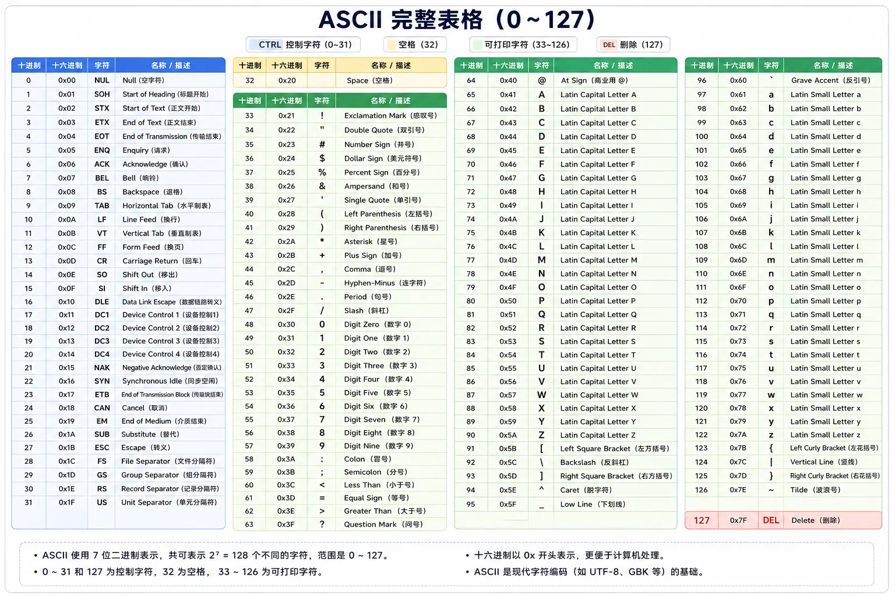

字符怎么表示 -- ASCII 与 Unicode
本讲你将理解：文字如何在只能存储数字的计算机中表示，以及为什么有时打开一个文件会出现乱码。
生活化类比：房间编号
想象一栋有 128 个房间的大楼。
前台不会用「总统套房」「花园房」这样的名称来管理房间。
他们给每个房间分配一个编号：101, 102, 103...
查编号 101 就知道：哦，那是标准大床房。
计算机处理文字用了完全相同的思路：
给每个字符分配一个数字编号，然后存储和处理这个数字。
这个「编号方案」就是字符编码。
ASCII：所有编码的起点
ASCII（American Standard Code for Information Interchange，美国信息交换标准代码）诞生于 1963 年。
它用 7 个 bit 来表示一个字符，总共能表示 2^7 = 128 个字符。
包含：
- 控制字符（0~31）：回车、换行、退格等不可见字符
- 可打印字符（32~126）：空格、标点、数字 0-9、大写字母 A-Z、小写字母 a-z
- DEL 删除字符（127）
ASCII 完整表格（0~127）

ASCII 的几个关键定位点
| 字符类别 | ASCII 范围 | 特征 |
|---|---|---|
| '0' ~ '9' | 48 ~ 57 (0x30 ~ 0x39) | 数字 0 的编码是 48，不是 0 |
| 'A' ~ 'Z' | 65 ~ 90 (0x41 ~ 0x5A) | 大写字母连续排列 |
| 'a' ~ 'z' | 97 ~ 122 (0x61 ~ 0x7A) | 小写字母连续排列 |
| 换行 '\n' | 10 (0x0A) | LF，Unix/Mac 换行 |
| 回车 '\r' | 13 (0x0D) | CR，老式 Mac 换行 |
大写和小写的巧妙关系
注意大写 'A' (65) 和小写 'a' (97) 的二进制表示：
'a' = 01100001
只有第 5 位不同（值 = 32，位编号从右往左、从 0 开始计数）
这不是巧合。
在二进制层面，把第 5 位从 0 改成 1，就直接完成了大写转小写。
这个精妙的设计让早期的电传打字机只需要一个简单的电路就能切换大小写模式。
第 5 位是按 从右往左、从 0 开始编号 的比特位来算的（即 LSB 为第 0 位），这是计算机里最常见的位编号方式：

大小写字母差 32，所以在 ASCII 层面，
'a' - 'A' = 32，'A' | 0x20 = 'a'（位运算切换大小写）。这一切都源于 ASCII 编码表的精妙布局。
ASCII 的局限：一个字节不够用
ASCII 只有 128 个字符，这对英文来说足够了。
但计算机传到欧洲后，问题来了：
法文有 e、德文有 u、西班牙文有 n——这些带重音符号的字母，ASCII 里根本没有。
于是每个国家开始「打补丁」——用 ASCII 没用到的 128~255 区域（第 8 位设为 1）：
- 西欧：ISO-8859-1（Latin-1），加了 e、u 等西欧字符
- 东欧：ISO-8859-2，加了斯拉夫字母
- 希腊：ISO-8859-7，加了希腊字母
- 中国：GB2312/GBK，用两个字节表示一个汉字
- 日本：Shift-JIS
- 韩国：EUC-KR
这成了一个灾难——同一段二进制数据，在不同编码下解读出的文字完全不同。
你打开一个日文文档看到乱码？那就是编码不匹配的经典症状。
Unicode：给全世界每个字符一个唯一编号
Unicode 的目标很简单也很宏大：
给世界上每一个字符分配一个唯一的数字编号（码点，Code Point）。
Unicode 不是 16 位的——它的码点范围是 U+0000 到 U+10FFFF，可以容纳超过 100 万个字符。
目前已经分配了约 15 万个字符，覆盖了几乎所有的人类书写系统，以及 emoji。
Unicode 码点示例
| 字符 | Unicode 码点 | 含义 | 所属区块 |
|---|---|---|---|
| A | U+0041 | 拉丁大写字母 A | 基本拉丁字母（兼容 ASCII） |
| 你 | U+4F60 | CJK 汉字「你」 | CJK 统一表意文字 |
| 好 | U+597D | CJK 汉字「好」 | CJK 统一表意文字 |
| hello | U+68D2 | 阿拉伯语「你好」 | 阿拉伯文 |
| runoob | U+E0001 | 语言标记 | Tags 区块 |
注意：Unicode 只是「编号方案」——告诉你「字符 X 的编号是 U+XXXX」。
它不规定「编号 U+XXXX 在文件中怎么存」。
存文件是 UTF-8、UTF-16 这些「编码方案」的事。
很多人把 Unicode 和 UTF-8 混为一谈。记住这个区分：Unicode 是词典（定义哪个字对应哪个编号），UTF-8 是书写规则（规定编号怎么写成字节序列）。
UTF-8：最流行的 Unicode 编码方案
UTF-8 的设计极其巧妙。它是一种变长编码：
- ASCII 字符（U+0000 ~ U+007F）：用 1 个字节存储
- 大部分欧洲和阿拉伯字符：用 2 个字节
- 中文、日文、韩文：用 3 个字节
- 补充字符（包括大部分 emoji）：用 4 个字节
UTF-8 编码规则
第一个字节的前导位模式告诉解码器：这个字符用几个字节存储。
- 以 0 开头：单字节字符
- 以 110 开头：双字节字符
- 以 1110 开头：三字节字符
- 以 11110 开头：四字节字符
- 后续字节都以 10 开头
UTF-8 的最大优势：完全兼容 ASCII。
任何合法的 ASCII 文本，同时也是合法的 UTF-8 文本。
这一特性让 UTF-8 可以平滑地替换掉旧的 ASCII 系统，而不破坏任何现有数据。
交互演示：编码实时查询
在下方输入任意文字，查看每个字符的 Unicode 码点、UTF-8 编码字节、以及占用空间。
操作建议：
- 输入纯英文，观察每个字符只占 1 字节。
- 输入中文，观察每个汉字占 3 字节。
- 输入
Hello RUNOOB，注意看每个字母的 ASCII 编码是否连续排列。 - 比较大小写字母的二进制，找出只有 1 位不同的对应字母对（如 A 和 a）。
编码乱码问题：原理与预防
乱码的本质只有一句话：用错了字典去解读数据。
假设一个文件里存了 UTF-8 编码的三个字节：E4 BD A0
- 用 UTF-8 解码：这 3 字节组成一个字符 → 「你」
- 用 GBK 解码：E4 BD 被当成一个 GBK 双字节字符 → 可能是某个不相关的汉字
- 用 Latin-1 解码：E4、BD、A0 被当成三个独立的西欧字符 → 「a + 1/2 + nbsp」之类的乱码
同一段二进制，三种字典读出了三种不同的文字。
如何避免乱码？
- 统一使用 UTF-8：现代 Web、API、数据库几乎都默认 UTF-8
- 明确声明编码：HTML 中写
<meta charset="UTF-8">，HTTP 响应头中写Content-Type: text/html; charset=utf-8 - 编辑器设置：VS Code、Sublime 等编辑器都支持设置文件编码为 UTF-8
BOM（字节序标记）问题
UTF-8 虽然不需要考虑字节序（因为它以字节为单位），但有些 Windows 程序会在 UTF-8 文件开头加上 BOM：EF BB BF。
这三个字节是用来标记「这个文件是 UTF-8 编码」的。
但在 Unix/Linux 系统上，BOM 可能导致各种问题：
- Shell 脚本第一行的
#!/bin/bash前面多了三个不可见字节，导致脚本无法执行 - PHP 文件中如果有 BOM，可能触发「headers already sent」错误
- JSON 解析器可能拒绝 BOM 开头的 JSON 数据
建议：UTF-8 文件使用「无 BOM」格式（UTF-8 without BOM），这也是大多数现代编辑器的默认设置。
代码演示：编码与解码
实例
import sys
# =============================================
# 演示 1: ord() 和 chr() 的基本用法
# =============================================
print("=" * 60)
print("演示 1: 字符与码点的相互转换")
print("=" * 60)
# ord() 获取字符的 Unicode 码点
text = "Hello RUNOOB"
for ch in text:
cp = ord(ch)
print(f" '{ch}' → 码点 U+{cp:04X} (十进制 {cp})")
print()
# chr() 根据码点获取字符
for cp in [65, 97, 48, 0x4F60, 0x597D]:
ch = chr(cp)
print(f" 码点 U+{cp:04X} → 字符 '{ch}'")
# =============================================
# 演示 2: 编码为字节序列 (encode)
# =============================================
print("\n" + "=" * 60)
print("演示 2: 字符串 → UTF-8 字节序列")
print("=" * 60)
texts = ["A", "Hello", "你好", "RUNOOB 教程"]
for text in texts:
utf8_bytes = text.encode('utf-8')
hex_str = utf8_bytes.hex(' ').upper()
print(f"\n文本: '{text}'")
print(f" 字符数: {len(text)}")
print(f" UTF-8 字节数: {len(utf8_bytes)}")
print(f" UTF-8 十六进制: {hex_str}")
# 逐字节分析
print(f" 字节分解:")
for i, b in enumerate(utf8_bytes):
bin_str = format(b, '08b')
# 判断字节类型
if b < 0x80:
typ = "ASCII 单字节"
elif b >= 0xC0 and b < 0xE0:
typ = "双字节首字节"
elif b >= 0xE0 and b < 0xF0:
typ = "三字节首字节"
elif b >= 0x80 and b < 0xC0:
typ = "后续字节"
else:
typ = "其他"
print(f" 字节 {i}: 0x{b:02X} = {bin_str} ({typ})")
# =============================================
# 演示 3: GBK 编码（中国常用的非 Unicode 编码）
# =============================================
print("\n" + "=" * 60)
print("演示 3: GBK 编码（对比 UTF-8）")
print("=" * 60)
text = "你好 RUNOOB"
utf8_bytes = text.encode('utf-8')
gbk_bytes = text.encode('gbk')
print(f"文本: '{text}'")
print(f" UTF-8 ({len(utf8_bytes)} 字节): {utf8_bytes.hex(' ').upper()}")
print(f" GBK ({len(gbk_bytes)} 字节): {gbk_bytes.hex(' ').upper()}")
# GBK 中每个汉字占 2 字节
print(f"\n 注意：GBK 中汉字占 2 字节，UTF-8 中汉字占 3 字节")
print(f" 对于中文文本，GBK 比 UTF-8 更紧凑")
print(f" 但 GBK 不支持所有 Unicode 字符（如 emoji）")
# =============================================
# 演示 4: 解码错误场景
# =============================================
print("\n" + "=" * 60)
print("演示 4: 解码错误场景（乱码的原因）")
print("=" * 60)
# 用 UTF-8 编码中文
original = "你好"
utf8_data = original.encode('utf-8')
print(f"原始文本: '{original}'")
print(f"UTF-8 编码: {utf8_data.hex(' ').upper()}")
# 错误 1: 用 GBK 解码 UTF-8 数据
try:
decoded_wrong = utf8_data.decode('gbk')
print(f"用 GBK 解码: '{decoded_wrong}' (乱码!)")
except Exception as e:
print(f"用 GBK 解码失败: {e}")
# 错误 2: 用 Latin-1 解码
decoded_latin = utf8_data.decode('latin-1')
print(f"用 Latin-1 解码: '{decoded_latin}' (看起来像西欧字符的乱码)")
# =============================================
# 演示 5: 创建合理的解码器
# =============================================
print("\n" + "=" * 60)
print("演示 5: 编码探测与安全解码")
print("=" * 60)
def safe_decode(data, encodings=['utf-8', 'gbk', 'latin-1']):
"""尝试用多种编码解码，返回第一个成功的结果"""
for enc in encodings:
try:
return data.decode(enc), enc
except (UnicodeDecodeError, LookupError):
continue
return data.decode('latin-1', errors='replace'), 'latin-1 (fallback)'
# 测试
test_cases = [
"Hello RUNOOB".encode('utf-8'),
"你好世界".encode('utf-8'),
"计算机".encode('gbk'),
]
for data in test_cases:
result, encoding = safe_decode(data)
print(f" 数据 ({len(data)} 字节) 用 {encoding} 解码: '{result}'")
print("\n" + "=" * 60)
print("总结：字符串是 Python 的内部表示，编码是存储/传输时的格式。")
print("永远在 I/O 边界做编码转换，内部始终使用 str 类型。")
print("=" * 60)
字符编码的现状与未来
截至今天，UTF-8 已经成为互联网的事实标准。
超过 98% 的网页使用 UTF-8 编码。
JSON 规范要求 UTF-8。
几乎所有现代编程语言默认使用 UTF-8 处理文本。
Unicode 仍在扩展。
新版本的 Unicode 每年增加新的字符，包括：罕见文字、历史文字、新的 emoji。
编码从「能不能表示」的问题，变成了「如何高效存储和传输」的问题。
如果你今天新建一个项目，选择 UTF-8 不会出错。它是向后兼容 ASCII 的、跨平台的、支持全语言的编码方案。唯一需要注意的是——确保你的全栈（前端、后端、数据库）都使用 UTF-8，不要混用。

点我分享笔记